PULSE RINGS, GAUGE AND TOUCH CONTROLS - review 3: baked-colour images (not tinted), shown as uploaded
speed gauge = gauge_track + gauge_ticks + gauge_glow + gauge_arc_gradient + boost_arc_gradient; the arcs are revealed by a rotating mask
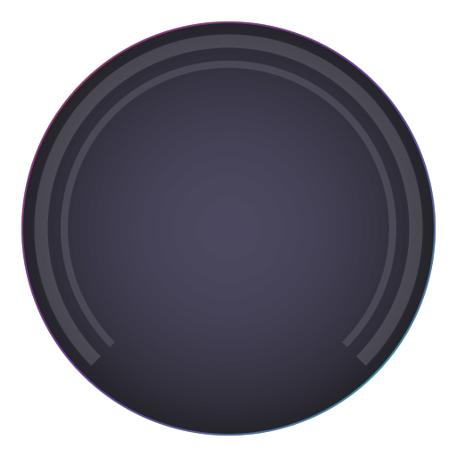
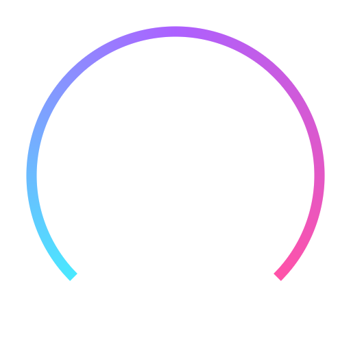
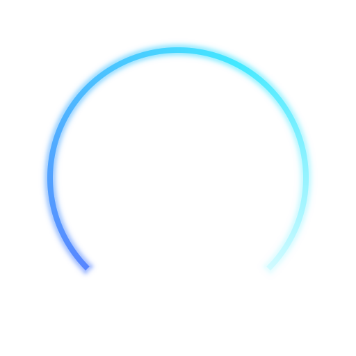
empty, 42%, full: a part-filled arc always ends in its own colour; the white tip is glow_soft
gauge_track
gauge_ticks
gauge_glow
gauge_arc
boost_arc
minimap_ring_gradient + rank_arc_gradient (track 25%, fill 42%)
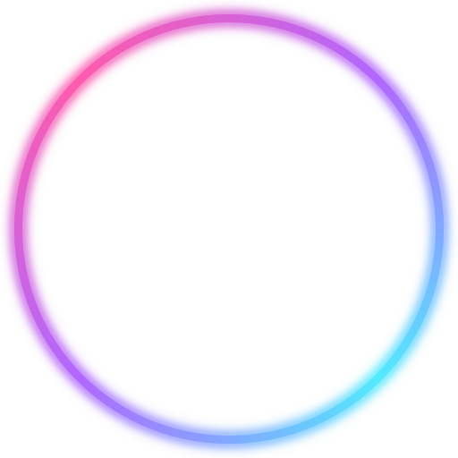
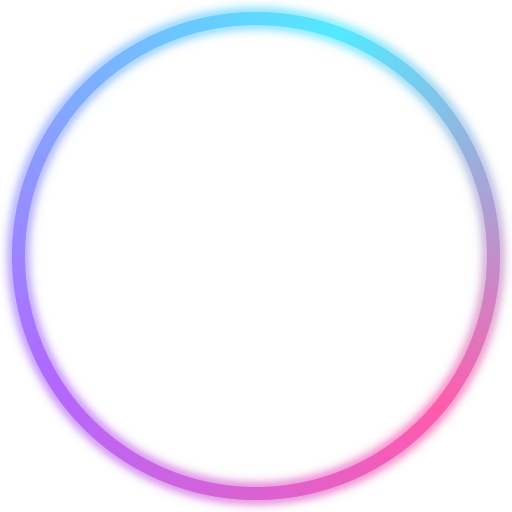
the two ring images, whole
title_slash_gradient
touch controls: the current (Classic) pictograms and positions on Pulse plates. 844 x 390 dp at 1.5 px per dp; accelerate, turn right and drift right held; boost charge 64%
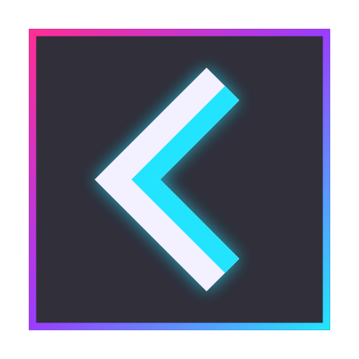
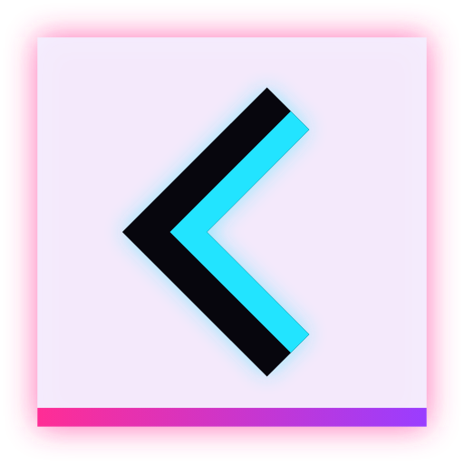
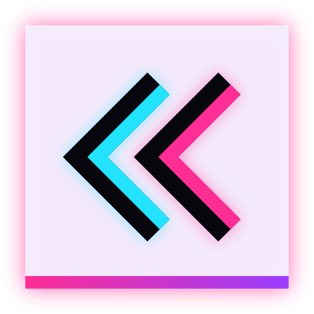
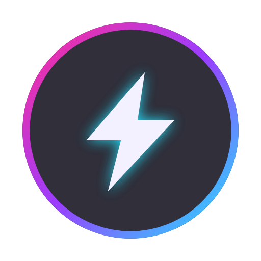
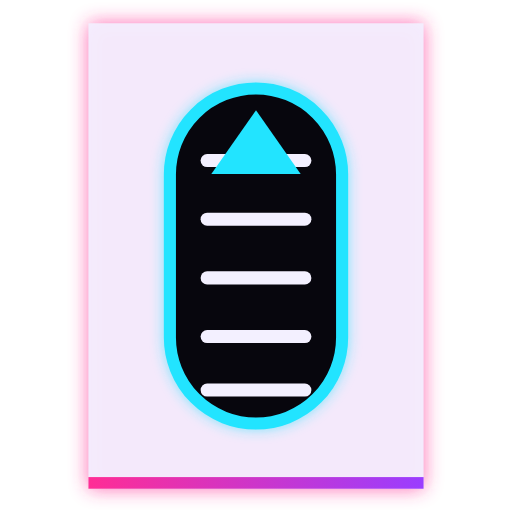
idle / pressed / disabled, 2 px per dp
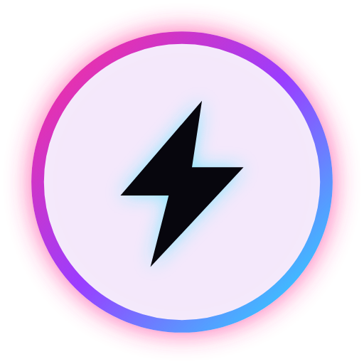
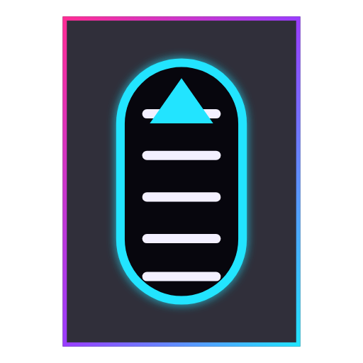
right-hand turn and drift = the same images mirrored;
disabled = idle at 40%; boost charge ring = rank_arc_gradient